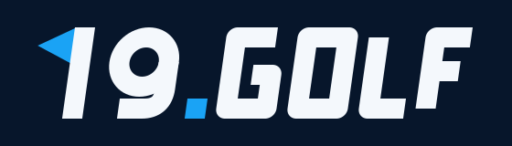
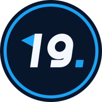
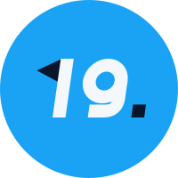

Rediseño de la marca 19.golf: más simple que el escudo actual, reconocible de un vistazo y pensado para web, textil y pancartas.
19.golf nació en 2019 y su logo se modificó después. Hoy el escudo con bola, banda y estrella tiene demasiados elementos. Necesita una versión más sencilla que sea reconocible y funcione en web, textil y pancartas.
Al cliente le gusta la versión oscura con azul eléctrico, porque la siente «más poderosa». Es la que ya usa en sus carteles de Golf Getafe Indoor.
Partimos del cartel de octubre 2026 y de los logos que nos envió. Falta contrastarlo con su web.
Estas dos últimas lecturas son hipótesis nuestras que hay que validar con el cliente.

El 1 es un palo de bandera con su banderín. El 9 es el hoyo. «19» recoge el guiño del hoyo 19: el que se juega después de la ronda, el del club y la conversación. Todo en una forma sin adornos.
El punto de «19.golf» queda en azul eléctrico: es el acento de la marca y el detalle que la hace reconocible.
Versiones de una sola tinta para bordado, vinilo y serigrafía.

